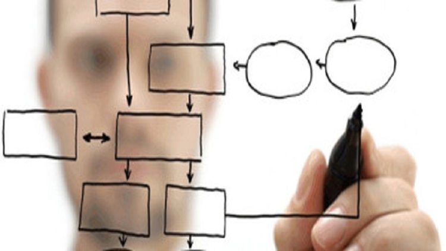

Tips para desarrollar la lógica de programación
Cuando entramos en el gran mundo de la programación orientada a objetos (POO) una de las primeras preguntas que buscamos resolver es ¿Cómo puedo o debo de desarrollar mi lógica?, una de las cosas que debemos de ser consientes es que aprender a programar toma tiempo y práctica, es por eso que aquí te decimos unos consejos o tips que son de mucha ayuda.
- Aprender a pensar: Un fundamento de la programación es solucionar problemas, es normal que para solucionar un problema debemos de pensar en cómo hacerlo, en muchas situaciones el tiempo de concentración pensando en cómo solucionar el problema nos puede llevar horas, donde podemos notar que la solución es un “;” faltante.
- Practica algoritmos: El algoritmo es un conjunto de operación realizados con el fin de solucionar un problema, desarrollar, practicar, crear algoritmos te ayudara a programar más sencillo y rápido, para empezar, puedes practicar con las tareas que hacer diariamente, ¿Cuáles son los pasos para desayunar? O ¿Cuáles son los pasos para realizar y terminar una tarea?
- Los Pseudocódigo: Es una herramienta que se utiliza para comunicar la estructura del programa a los programadores, no es una forma de programación, solucionar Pseudocódigo puedes dedicarle 30 minutos pensando en la solución varias veces.
- Juega ajedrez: No importa si sabes o no, lo que importa es que juegues ya que jugar ajedrez aumenta la destreza cerebral.
- Las Operaciones matemáticas: Es importante saber y utilizar operaciones matemáticas ya que en la programación vas a verlas o usarlas, también es bueno usarlas ya que te ayudaran a desarrollar tu lógica.
- Estudia los códigos que tienes resueltos: Una gran ayuda que puedes hacer con algo que ya hiciste y que entiendes es leer el código que realizaste para solucionar un problema, puedes modificarlo (ten una copia del original por si llegas a dañarlo por completo), mejorarlo, agregarle o quitarle código repetitivo.
- La curiosidad es una virtud: Aquí ser curiosos no es malo, ni nadie te va a decir que no seas curioso con el código, por el problema a solucionar o por aprender algo nuevo, ten presente que muchas personas exitosas han llegado por ser curiosos en alguna cierta parte de su historia.
- Práctica lo aprendido: No importa si ya lo practicaste 100, 200 o 2000, sigue practicando, ten presente que en este mundo practicar es importante ya que fortaleces, aprender, mejoras lo aprendido, logrando ser cada vez mejor en el lenguaje que practiques.